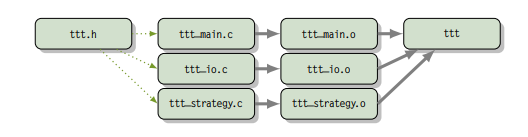
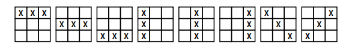
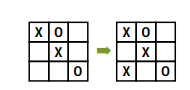
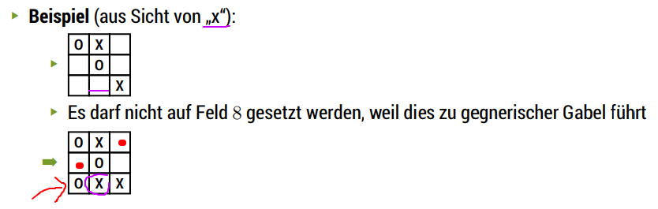

In this lecture chapter we turn our attention to a little project to use some of the learned skills together to build something. Therefore we build a "game". Because the emphasis is on the development cycle, there will also be preliminary and "wrong" solutions.
I might refer to the slides more often in the next two posts that regard this "game" because it would get pretty messy else and just copy & pasting code is not a good use of time, so I might skip that at some points and tell you to look at the slides directly.
This chapter also spans two lectures so lecture 20 and 21 will be pooled into this single blog post.
Intro
The game we're building is TicTacToe (TTT), where there's one player versus the computer as the opponent player. TTT is a round-based game. Regardless of whose turn it is, the current game score should always be shown. The game continues until victory or draw. These lead to the following high level pseudo algorithm:
Input who will start -> turn {player, computer}
repeat
if turn == computer then
calculate move
turn <- player
else
input move
turn <- computer
end if
display move
until (somebody won) or (draw)
Modern programs usually offer a GUI (graphical user interface) but we'll stick to our beloved console (which might actually help with portability if we adhere to the POSIX-Standard). On the terminal the game could be visualized like this:
x | o | x
--+---+--
x | o |
--+---+--
o | | x
Not as beatufiul as a GUI but much more simple for now. And to not obstruct the later development of a possible GUI, we should seperate the user interface as much as possible from the program logic.
To do so we modularize our project into three modules:
- "tttmain.c" → superstructure that combines the others and provides the
mainmethod - "tttio.c" → responsible for input and output
- "tttstrategie.c" → responsible for calculating the move of the computer
To share common types and interface we also want a shared header file "ttt.h".
This is how the file structure looks

Excourse: Make
When a project consists of multiple modules, each of them has to be translated to an object file seperately (eg via gcc -c <file.c>) and then all object files have to be linked (with the libraries).
Doing this by hand is cumbersome.
What to do? Well you could write a script to automate the job, but do we really want to compile and translate every file even if we only change one of lets say 10 files? Hint: No we don't :D and that's why scripts (batch jobs) are not so well suited (beware that it is still possible to do that and some programmers actually prefer that which is totally fine).
Another solution to this are build systems also called build automation tools. Build automation is the process of automating the creation of a software build and the associated processes including: compiling computer source code into binary code, packaging binary code, and running automated tests (source: wikipedia).
We'll focus on one of the most common build tools which is make.
Wikipedia: Make is a build automation tool that automatically builds executable programs and libraries from source code by reading files called Makefiles which specify how to derive the target program. Though integrated development environments and language-specific compiler features can also be used to manage a build process, Make remains widely used, especially in Unix and Unix-like operating systems.
Besides building programs, Make can be used to manage any project where some files must be updated automatically from others whenever the others change. There are now a number of dependency-tracking build utilities, but Make is one of the most widespread, primarily due to its inclusion in Unix.
As stated above make interprets what is written in a so called "Makefile". A Makefile contains five kinds of things: explicit rules, implicit rules, variable definitions, directives, and comments.
- explicit rule → says when and how to remake one or more files, called the rule's targets; it lists the other files that the targets depend on, called the prerequisites of the target, and may also give a recipe to use to create or update the targets
- implicit rule → says when and how to remake a class of files based on their names; it describes how a target may depend on a file with a name similar to the target and gives a recipe to create or update such a target
- variable definition → is a line that specifies a text string value for a variable that can be substituted into the text later
- directive → is an instruction for make to do something special while reading the makefile such as reading another makefile
- comment → a comment is designated by '#' and ignores the rest of the line
To define variables in a makefile the following syntax is used:
# <name> = <value> or <name> := <value>
objects = program.o foo.o utils.o # variable that holds names of object files
# or
objects := program.o foo.o utils.o
# acess via $(objects) or ${objects}
Slides: The variant/flavour without colons (":") allows for recursion in the name resolution.
To read more about variables and the differences in the flavours you can go here.
To define functions in a makefile the following syntax is used:
# $(<functionname> <arg1>, <arg2>, ..) or ${<functionname> <arg1>, <arg2>, ..}
comma:= ,
empty:=
space:= $(empty) $(empty)
foo:= a b c
bar:= $(subst $(space),$(comma),$(foo)) # bar is now 'a,b,c'
Here the subst function, which is built-in with alot of others, replaces each space with a comma, through the value of foo, and substitutes the result. Here you can read more about functions in makefiles.
Here's another example from the slides:
SOURCEFILES = $(wildcard ttt_*.c)
OBJECTFILES = ${subst .c,.o,$(SOURCEFILES)}
It is pretty common to use functions for text manipulation purposes.
Here're some more example functions (more can be found in the documentation):
$(subst <from>,<to>, <text>) # replaces all <from> with <to> in <text>
$(addprefix <prefix>,<list>) / $(addsuffix <suffix>,<list>) # adds the pre or suffix to every word in <list>
$(join <list1>,<list2>) # joins the two lists by word into one list
$(foreach <var>,<list>,<text>) # creates for each value in <list> a new instance of <text> in which every occurence of <var> is replaced by the list value
$(shell <command>) # executes the <command> in a shell
The rules in a makefile have the following form:
target: dependencies
system command(s)
A target is usually the name of a file that is generated by a program (eg executable or object files), but a target can also be the name of an action to carry out, such as "clean".
A dependency (also called prerequisite) is a file that is used as input to create the target, which often depends on several files. Rules that specify a recipe for the target don't need to have prerequisites (eg delete command that is associated with target "clean" does not have any prerequisites).
The system command(s) (also called recipe) is an action that make carries out. A recipe may have more than one command, either on the same line or each on its own line. Note the use of meaningful indentation in specifying commands; also note that the indentation must consist of a single <tab> character.
Rules that operate on classes of files (eg via wildcard) are called "implicit" rules in constrast to explicit rules. % serve as wildcards.
Example rules:
main.o: main.c defs.h
cc -c main.c
clean:
rm edit main.o kbd.o command.o display.o
And here're some automatic special variables than can be used in rules:
-
$@= the file name of the target of the rule -
$<= the name of the first prerequisite (if the target got its recipe from an implicit rule, this will be the first prerequisite added by the implicit rule) -
$?= the names of all the prerequisites that are newer than the target, with spaces between them -
$^= the names of all the prerequisites, with spaces between them -
${@D}= the directory part of the file name of the target, with the trailing slash removed -
${<D}= the directory part of the first prerequisite -
${@F}= the file-within-directory part of the file name of the target -
${<F}= the file-within-directory part of the first prerequisite
To execute make run make <target> which starts all activities that are accordingly to the Makefile required to update <target>. If a file is (already) updated is decided based on the timestamp of the file. If the <target> is ommitted when executing make, the first rule in the Makefile will be used.
Example Makefiles:
a: b
c: e f
b: c d
So in this case when you run make a:
-
f,e, anddare required to existing - then first
cis generated/updated out ofeandf - then
bis generated/updated out ofcandd - da es für „a“ Ausführungsteil gibt, ist hier die Abarbeitung beendet
For our TicTacToe Project the Makefile could look like this:
PROG = ttt # program name
CC = cc # compiler
CFLAGS = -std=c99 -pedantic -Wall -Wextra # compiler flags
LDFLAGS = # linker flags (ld is the gnu linker)
HEADER = $(wildcard ttt*.h)
SOURCEFILES = $(wildcard ttt_*.c)
OBJECTFILES = $(subst .c, .o, $(SOURCEFILES))
$(PROG): $(OBJECTFILES)
$(CC) $(LDFLAGS) $(OBJECTFILES) -o $(PROG)
%.o: %c
$(CC) -c $(CFLAGS) $<
.PHONY: clean
clean:
rm -f $(PROG) *.o
The Main Loop
Going back to our initial draft of our high level pseudo code algorithm we might want some modifications that account for:
- recognition weather win or draw
- probably closely related to the strategy part of our program so should be done there
- cancellation of the game
- has to be dealt with in the main loop
- multiple games in a row
- also belongs in the main loop
Here's the second version:
repeat
Input who will start -> turn {player, computer}
repeat
if turn == computer then
calculate move
turn <- player
else // turn = player
input move // abort is special move
turn <- computer
end if
display move
until (somebody won) or (draw) or (abort)
Input if another game?
until not another game
This is how the main loop in "tttmain.c" could look like in C:
do { // main loop
int player = ttt_x_or_o(); // select symbol (x or o)
bool computer_turn = (player == 'o'); // x starts if player is o then the computer starts
ttt_init_board(board); // erase board
int move, assessment;
do { // main loop for a game instance
ttt_update_display(board); // display board
move = computer_turn ? // computer's move?
ttt_calculate_move(board, ttt_opponent(player)) : ttt_input_move(board);
if (move != TTT_ABORT) { // continue?
board[move] = computer_turn ? ttt_opponent(player) : player; // apply move
}
computer_turn = !computer_turn; // change the turn
assessment = ttt_won_or_draw(board, player); // game over?
if (assessment != TTT_UNDECIDED) { // game finished
ttt_update_display(board); // display final board
ttt_output_result(assessment); // print result
}
} while ((move != TTT_ABORT) && (assessment == TTT_UNDECIDED));
} while (ttt_another_game() == true);
As you can see we use function that are not defined yet. Some of those shall be implemented in other modules. A somewhat common ("best") practice is to prefix global names with the name of the project (and optionally the module) to reduce the likelihood of name conflicts. In this case we use ttt_ as a prefix.
Now we've got to ask ourselves how we want to represent the data in C. It first seems natural to use a multidimensional array int board[3][3] to represent the game board. But
- this would always require two indices → and therefore 2 loops
- it is likely that we want to pass the board to functions → array decay even unclearer when dealing with nested arrays (see lecture 08 for array decay)
For those reasons we use a "normal" array with 9 fields int board[9] (resp typedef int ttt_board_t[NUMBER_OF_FIELDS]).
Let's put declarations of types and constants in the shared header file ttt.h
#include <stdbool.h>
/* general constants */
typedef enum {TTT_ABORT = -1, NUMBER_OF_FIELDS = 9} ttt_constant_t;
/* game outcomes */
typedef enum {TTT_PLAYER_WINS, TTT_COMPUTER_WINS, TTT_DRAW, TTT_UNDECIDED} ttt_result_t;
typedef int ttt_board_t[NUMBER_OF_FIELDS];
The prototypes (interfaces/declarations) of the (to be written) C functions that will be called from other modules will also be added there.
Two of the functions that we used in the main loop also go into the main file "tttmain.c":
void ttt_init_board(ttt_board_t f) {
/* emtpies every field */
int i;
for (i = 0; i < NUMBER_OF_FIELDS; i++) {
f[i] = ' ';
}
}
char ttt_opponent(char symbol) {
switch (symbol)
{
case 'x': return 'o';
case 'o': return 'x';
default: return ' ';
}
}
Input & Output
Since we use a text based interface our user interface is not so complicated and does not require as much of an effort (real user interfaces usually require a lot of work). But we still want to be lazy :D
For example let's look at options to clear the screen:
- scroll down → window size has to be known (N)
- unix command
clear→ really slow and not portable (N) - ANSI/VT100 escape sequence (control command) → also not 100% portable
- best solution: usage of portable libraries for example ncurses (or pdcurses for windows)
To keep it simple we use the solution with the ANSI escape codes:
/* Use VT100 ESC code to clean terminal */
static void ttt_clean_terminal(void) {
printf("%c[2J", 27);
}
Now to determine whether or not another game should be started we use getchar(), which returns the integer value (!) of the entered character.
bool ttt_another_game() {
int input;
printf("Do you want to play another game [y/n] -> ");
input = getchar();
getchar(); // see notes below..
if ((input == 'Y') || (input == 'y') ) {
return true;
} else {
return false;
}
}
Slides: Es gibt allerdings ein Problem und zwar, dass das Terminal gibt eine Eingabe erst weiter, wenn <RETURN> gedrückt wurde. Das Zeichen "⏎" ist Teil des Eingabestroms. Lösung: Die Funktion wird zweimal aufgerufen und das zweite Ergebnis verworfen.
I actually fail to see what is meant by the "problem" described above and how the second call to getchar() should help with that… I tested the code with and without it and got identical behaviour, but this is what stands in the slides.
Now let's implement the function for inputting a move:
int ttt_input_move(const ttt_board_t board) {
int input;
printf("\nPlease enter the number of the field you want to occupy (0 for abort)\n");
ttt_display_board(numberfield);
printf("Your move ->");
do {
do {
input = getchar(); getchar(); // xD defuq :D
} while ((input < '0') || input > '9');
if (input == '0') return TTT_ABORT;
input = input - 1 // character to integer array index
} while (board[input] != ' ');
return input;
}
To output/print the board we use a bit of ACII art :D
void ttt_display_board(const ttt_board_t board) {
for (int i = 0; i < 3; i++) {
if (i) { // not for first row
printf("\n -+-+-");
}
printf("\n ");
for (int j = 0; j < 3; i++) {
if (j) { // not for first column
printf("|");
}
printf("%c", board[3*i+j]);
}
}
printf("\n");
}
Strategy & Logic
Now we turn our attention to the strategy and logic behind the Computer's move. Let's start with a high level strategy that can be finetuned later on:
// Computer's Move Version 1
if (can I win?) then
choose winning move
else
if (can opponent win?) then
block winning move
else
if can I win next time? then
prepare win
else
whatever
end if
end if
end if
To choose the winning move we have to know which combinations are considered a win. There are exactly 8 different winning combinations

Such combination is from now on called triple. A win with a triple is possible when two fields of a triple are occupied with the own symbol/mark and the third field is free/unoccupied. Therefore there are \(8*3=24\) combinations for "can I win?".
We could hardcode this:
// winning_move (not final version)
int winning_move(const ttt_board_t f, char s) {
/* triplet (0,1,2) */
if ((f[0] == s) && (f[1] == s) && (f[2] == ' ')) return 2;
if ((f[1] == s) && (f[2] == s) && (f[0] == ' ')) return 0;
if ((f[0] == s) && (f[2] == s) && (f[1] == ' ')) return 1;
/* ...
and so on
...
*/
/* triplet (2,4,6) */
if ((f[2] == s) && (f[4] == s) && (f[6] == ' ')) return 6;
if ((f[4] == s) && (f[6] == s) && (f[2] == ' ')) return 2;
if ((f[2] == s) && (f[6] == s) && (f[4] == ' ')) return 4;
return -1;
}
Although this function is correct. It is rather convoluted, unneccessarily big and therefore error prone. Another idea is to use data and indirections:
// winning_move (not final version)
enum { NUMBER_TRIPLES = 8, NONE = -1}; // Number of winning triples, and code when no win possible
typedef int ttt_triple_t[3];
const ttt_triple_t triples[NUMBER_TRIPLES] =
{
{0,1,2}, {3,4,5}, {6,7,8}, {0,3,6}, {1,4,7}, {2,5,8}, {0,4,8}, {2,4,6}
};
int winning_move(const ttt_board_t f, char s) {
for (int i = 0; i < NUMBER_TRIPLES; ++i) {
for (int j = 0; j < 3; ++j) {
/* always get the two other indices to check all possible combs in a triple
j = 0 -> idx2=1, idx3=2
j = 1 -> idx2=2, idx3=0
j = 2 -> idx2=0, idx3=1
*/
int idx2 = (j+1) % 3;
int idx3 = (j+2) % 3;
// check the fields specified in triples eg 3,4,5 in the game board f
if ((f[triples[i][j]] == ' ') &&
(f[triples[i][idx2]] == s) &&
(f[triples[i][idx3]] == s)) {
return triples[i];
}
}
}
return NONE;
}
To determine whether or not the opponent can win (can opponent win?) we can use the same function:
// can opponent win (not final version)
int block_opponent_winning_move(const ttt_board_t f, char s) {
return winning_move(f, ttt_opponent(s));
}
Looking at this, a structure becomes apparent: Multiple functions that evaluate the positions similar to winning_move() are needed. So let's formulate a more generic function to evaluate the board situation/positions.
There are a few things that could be of interest in regards to the situation on the board:
- a triple has won → end the game
- a triple can lead to a win →
winning_move() - a triple is "mine" (triple is blocked/marked by me) → can force an opponent to a certain move
- a triple is useless (because blocked by both)
- a triple is empty
How can we assess different "evaluations" of situations via code when we calculate them via the same schema? Idea: Usage of prime numbers.
Own symbol counts 2. Opponent symbol counts 5 and an empty field counts 0. Then the fields/counts of a triple are added:
- own win → ∑ = 6
- opponent win → ∑ = 15
- own win possible → ∑ = 4
- opponent win possible → ∑ = 10
- "my" triple → ∑ = 2
- "opponent's" triple → ∑ = 5
- empty triple → ∑ = 0
- useless triple → ∑ = 7 or ∑ = 9 or ∑ = 12
The advantage of this approach is that each triple only needs to be evaluated once. The disadvantage is that we then have to search in the triple for the empty field afterwards, but we are willing to take this consequence because we only execute once.
enum { NUMBER_TRIPLES = 8, I_KEY = 2, OPP_KEY = 5 };
typedef int ttt_triple_t[3];
const ttt_triple_t triples[NUMBER_TRIPLES] =
{
{0,1,2}, {3,4,5}, {6,7,8}, {0,3,6}, {1,4,7}, {2,5,8}, {0,4,8}, {2,4,6}
};
// Evaluate a triple in accordance to the marked fields and keys
int ttt_evaluate(const ttt_board_t field, int tnr, int my_symbol) { // tnr = index of tuple we want to evaluate
int val = 0;
int opp_symbol = ttt_opponent(my_symbol);
for (int i = 0; i < 3; ++i) {
if (field[triples[tnr][i]] == my_symbol) {
val += I_KEY;
} else if (field[triples[tnr][i] == opp_symbol]) {
val += OPP_KEY;
}
}
return val;
}
Now the strategy of the computer under the use of ttt_evaluate would look like this:
static int winning_move(const ttt_board_t board,
const ttt_tripleval_t eval,
int who) {
for (int i = 0; i < NUMBER_TRIPLES, i++) {
if (eval[i] == who) { // find winning triple
for (int j = 0; j < 3; j++) {
if (board[triples[i][j]] == ' ') { // find the empty place
return triples[i][j];
}
}
}
}
return NONE;
}
int ttt_calculate_move(const ttt_board_t board, char symbol) {
ttt_tripleval_t eval;
for (int i = 0; i < NUMBER_TRIPLES; ++i) {
eval[i] = ttt_evaluate(field, i, symbol);
}
int move = winning_move(board, eval, I_CANWIN);
if (move != NONE) {
return move;
}
move = winning_move(board, eval, OPP_CANWIN);
if (move != NONE) {
return move;
}
// slides: yet to implement
return NONE;
}
If we think back to our high level strategy:
if (can I win?) then
choose winning move
else
if (can opponent win?) then
block winning move
else
if can I win next time? then
prepare win
else
whatever
end if
end if
end if
How can we prepare a win for the next draw (Zug)?
To prepare a win we should prepare two triples that can be won (fork). For example in this picture where the computer is X and the player (O) can only block 1 winning triple

The "common" field (in both winning tuples, the X in the bottom left) shall be called "pivot field".
To find a pivot field two conditions need to be fulfilled:
- there have to be two triples that are solely owned by the computer (count/score = 2)
- those two triples need to share an empty field
Procedure:
- inspect all 8 win tuples and determine whether or not they are evaluated with 2
- every field that occurs in one of these tuples and is empty gets a point (+=1)
- a field that then has more than 1 point is a pivot field
int forking_move(const ttt_playground_t field, const ttt_tripleval_t eval) {
int i, j = 0;
int singles[NUMBER_OF_FIELDS] = {0 ,0 ,0 ,0 ,0 ,0 ,0 ,0 ,0}; // used to count the "points"
for (i = 0; i < NUMBER_TRIPLES; ++i) {
if (eval[i] == I_KEY) {
for (j = 0; j < 3; j++) {
if (field[triples[i][j]] == ' ') {
++singles[triples[i][j]];
}
}
}
}
// iterate over singles and find one with >1 points which is therefore pivot field
for (i = 0; i < NUMBER_OF_FIELDS; ++i) {
if (singles[i] >= 2) {
return i;
}
}
return NONE;
}
Offense
Suppose that our strategic calculations up till now don't yield a move. In that case we should execute a logic that blocks possible wins (via pivot fields) from our opponent. Let's adapt our high level algorithm accordingly:
if (can I win?) then
choose winning move
else
if (can opponent win?) then
block winning move
else
if (can I fork?) then
choose pivot element
else
if (can opponent fork?) then
block opponent's pivot element
else
whatever
end if
end if
end if
end if
The problem with that is however that the opponent could get into possession of two pivot elements. So as an alternative approach we choose to go the offensive route, trying to get into a situation where we're forcing our opponent to block a win of ourselves. But there's an important detail. We have to avoid that we "gift" our opponent a fork/pivot field by forcing him to block our win! See below:

So we have to adapt the strategy once again:
if (can I win?) then
choose winning move
else
if (can opponent win?) then
block winning move
else
if (can I fork?) then
choose pivot element
else
if (can I force without opponent's fork?) then
choose forcing move
else
move to best available place
end if
end if
end if
end if
To find our offensive move/draw we first inspect where we cannot go. The fields remaining from that analysis are pivot fields of our opponent. Then we search for triples where we own exactly one field (and where there's no opponent field) and score those fields with a score of 2. If there's an pivot element from our opponent in one of those triples choose that as the target for our next move, else just choose an empty field. Here's the C implementation:
int forcing_move (const ttt_board_t board, const ttt_tripleval_t eval) {
int opp_singles[NUMBER_OF_FIELDS];
for (int i = 0; i < NUMBER_TRIPLES; ++i) {
if (eval[i] == OPP_KEY) {
for(int j = 0; j < 3; j++) {
if (board[triples[i][j]] == ' ') {
++opp_singles[triples[i][j]];
}
}
}
}
for (int i = 0; i < NUMBER_TRIPLES; ++i) {
if (eval[i] == I_KEY) {
if ((opp_singles[triples[i][0]] <= 1) &&
(opp_singles[triples[i][1]] <= 1) &&
( opp_singles[triples[i][2]] <= 1)) {
for (j = 0; j < 3; j++) {
if (board[triples[i][j]] == ' ') {
return triples[i][j];
}
}
}
for (j =0; j < 3; j++) {
if( opp_singles[triples[i][j]] > 1) {
return triples[i][j];
}
}
}
}
return NONE ;
}
In the case where we still don't have a field for the next draw, we move to best available place in accordance to our algorithm. Fields still have different value though (middle → corners → edges):
int best_remaining_move(const ttt_board_t board) {
const int best[] = {4, 0, 2, 6, 8, 1, 3, 5, 7}; // fields sorted by decreasing value
for (int i = 0; i < NUMBER_OF_FIELDS; ++i) {
if (board[best[i]] == ' ') // if available
return best[i];
}
return NONE; // should never happen
}
By combining all these functions that we defined, we are now able to calculate the move:
int ttt_calculate_move (const ttt_board_t field, char symbol) {
ttt_tripleval_t eval;
for (int i = 0; i < NUMBER_TRIPLES; ++i) {
eval[i] = evaluate(field, i, symbol);
}
int move = winning_move(field, eval, I_CANWIN);
if (move != NONE) return move;
move = winning_move(field, eval, OPP_CANWIN);
if (move != NONE) return move;
move = forking_move(field, eval);
if (move != NONE) return move;
move = forcing_move(field, eval);
if (move != NONE) return move;
return best_remaining_move(field);
}
Since all the functionality is combined in ttt_calculate_move we only have to make this function available to the outside, and declare all the other, internal functions as static.
The last function we will also globally need is ttt_win_or_draw to determine the end of a game:
ttt_result_t ttt_won_or_draw ( const ttt_board_t board , char symbol) {
bool undecided = false;
for(int i = 0; i < NUMBER_TRIPLES; i++) {
int state = evaluate(board, i, 'x');
switch (state) {
case I_WIN:
if (symbol == 'x') return TTT_PLAYER_WINS;
else return TTT_COMPUTER_WINS;
case OPP_WIN:
if (symbol == 'o') return TTT_PLAYER_WINS ;
else return TTT_COMPUTER_WINS;
case DRAW_I: /* falltrough */
case DRAW_OPP: /* fall trough */
break;
case DRAW: /* fall trough */
default:
undecided = true;
}
}
if (undecided) {
return TTT_UNDECIDED;
} else {
return TTT_DRAW;
}
}
Aaaaaand that's it ◕ ‿‿ ◕
The whole tic tac toe code is in the appendix of the official script. And remember that this is just one of many ways on how to implement tic tac toe :)
Sources: Wikipedia was heavily used for this post